Lien Waivers 101
The Essential Guide
Lien waivers are valuable tools used to increase accountability and offer legal protection within the construction industry, but they are also sometimes seen as complex legal documents that are challenging to understand.
On the one hand, they can help to ensure efficient payments that ultimately keep construction projects on track, but on the other hand, they have a tendency to spawn excess paperwork and lengthy paper trails.
The truth of the matter is, lien waivers are powerful tools that can help prevent massive legal headaches down the road — and because of that, they’re something every general contractor or homebuilder should understand.
That’s exactly why we’re breaking down lien waivers step by step.
Chapter 1
Lien Waiver Fundamentals
It’s tough to comprehend calculus if you haven’t yet mastered the basics of addition and subtraction. Similarly, comprehending the complexities of lien waivers is made far more difficult if you lack a basic understanding of the language used to discuss them.
Let’s start at the beginning, shall we?
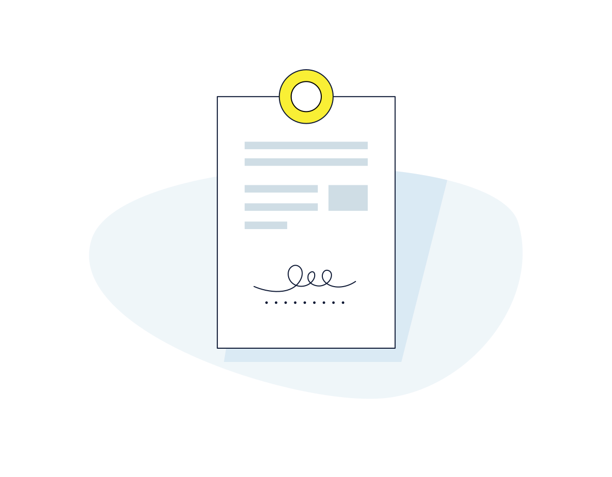
What is a lien waiver?
Essential in the construction world, a lien waiver is a legal document that in its simplest form is a receipt for payment.
But unlike most receipts we deal with on a daily basis, this document does more than just show proof of payment.
A lien waiver serves as a written legal agreement between a payer and a counterparty in which said counterparty acknowledges having been paid for their services, and therefore gives up their right to place a lien on the payer’s property or goods.
It’s like this:
A property owner (the payer) receives a signed legal document called a lien waiver from their contractors, subcontractors, or other like parties (the counter-party), which states that they have received payment for the work they were hired to do.
This legal receipt then revokes the subcontractor’s right to place a mechanic’s lien on the property in the future and prevents legal headaches down the road.
So, what is a lien in the first place?
A lien is a legal claim against assets that are being used as collateral to satisfy a debt owed.
Liens exist to protect service providers (such as construction contractors) from non-payment. If a lien is attached to a property, it creates a public record of the debt. The creditor (the person to whom the money is owed) must be paid and the lien removed before the property can be sold or transferred.
In the construction industry, these debts typically come in the form of services rendered that have gone unpaid, and the collateral asset is usually the property on which said services were performed.
Lien waivers are tools leveraged as means of preventing liens from being placed on the property in the first place; the document literally waives the signor’s right to lien because it states that there are no debts owed.
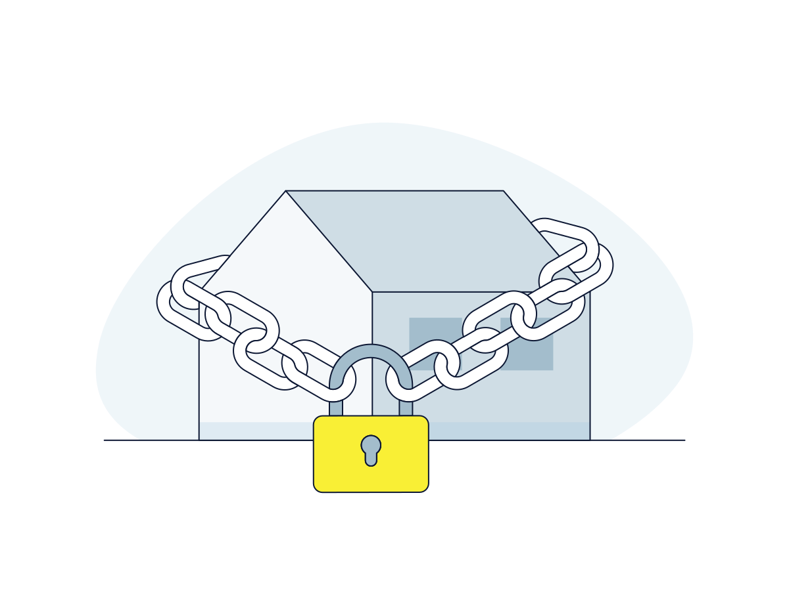
How is a mechanic’s lien different?
A mechanic’s lien is a claim on an improved property by any contractor, subcontractor, laborer, or materialman for the monies owed to them for said improvements.
If a property owner fails to pay a subcontractor for his or her services rendered, a mechanic’s lien can be attached to the property, which would then incentivize the owner to pay the debt owed.
Furthermore, it actually prevents the owner from selling the property until the debt has been settled. In general, mechanic’s liens take precedence over say, a mortgage on the property, because it is assumed that the value of the property has increased to the extent of the lien.
The mechanics lien gives the subcontractor leverage to get paid. Because they’ve helped to improve the property with materials and manual labor, they are entitled to their “piece of the pie.”
Now, don’t forget about subcontractor agreements.
A subcontractor agreement is a written contract settled upon between two contractors (or a project manager and subcontractor) that solidifies the specifics of any work agreement between the two parties.
Its goal of this document is to specify and ensure the completion of work within a certain framework.
Subcontractor agreements typically lay out project specifics, such as the scope of work, timeline, and payment terms, and can also qualify the subcontractor’s ability (or inability) to use a mechanic’s lien in case of a non-payment or late payment.
These contracts help to set clear expectations for projects and builds, and furthermore help avoid confusion or miscommunication down the road.
Not all lien waivers are created equal.
Although all lien waivers do serve the same overarching purpose, the information included on each and every one actually varies from state to state — and can even differ project by project.
That being said, there are certain informational aspects that all of these legal documents must exhibit in order to be considered complete and valid.
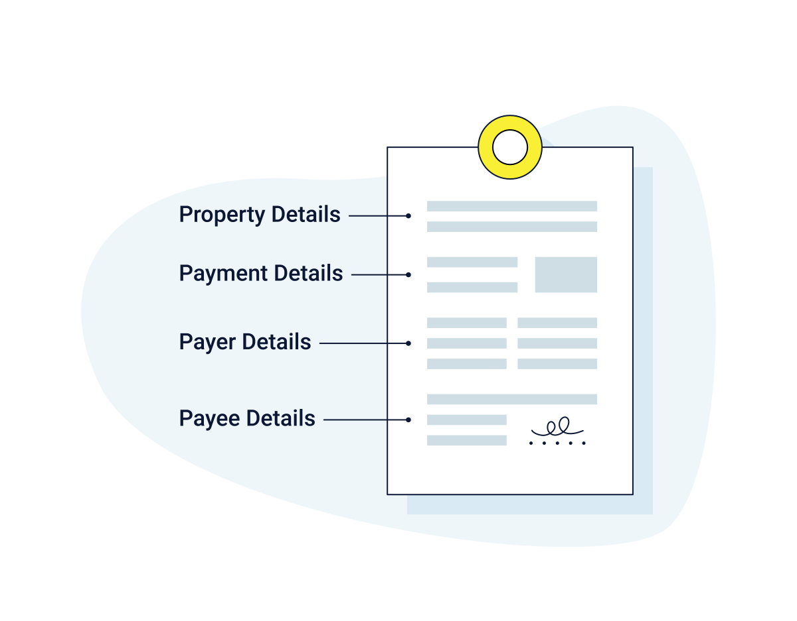
It never hurts to consult with legal counsel when creating and completing lien waivers to ensure all the necessary information is included, but there are a few general categories that should always make the cut.
Pertinent Parties Information: The information of both the Payor/General Contractor and the Payee/Vendor should be documented. Include legal names, addresses, and a method of contact for both parties.
Project Details: Most lien waivers include all pertinent information about the project such as the address, the project’s start date, the name of the project manager, and his or her contact information.
Invoice or Payment Details: This information tends to vary based upon the type of lien waiver (we’ll get into that a bit more in the next section) but often times lien waivers show specific payment information such as the check number, invoice number, or pay app number as a means of proving the receipt of payment.
Chapter 2
Different Types of Lien Waivers
Now that we have an overarching understanding of lien waivers under our belts, let’s get a little more specific about the various types of lien waivers that you may encounter within the industry.
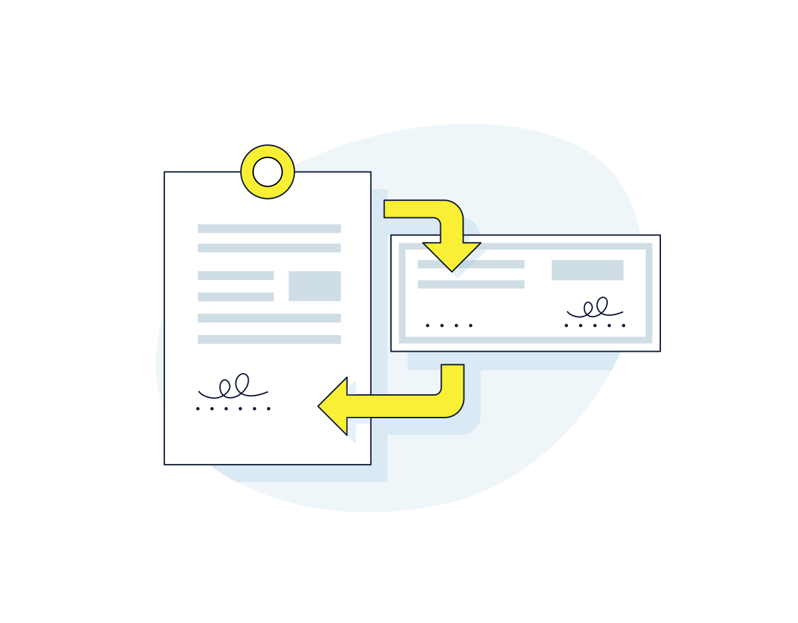
Unconditional lien waiver
An unconditional lien waiver is one that goes into effect the moment it is signed, regardless of whether payment has been received or not.
Think about it like this: if you have unconditional love for someone, it means you love that person, regardless of the circumstances. Similarly, an unconditional lien waiver means you waive your right to lien, regardless of the circumstances.
Unconditional means there are no conditions that need to be met, aside from a signature on the document, to make it legally binding.
Now, remember: the main purpose of a lien waiver is for the signor to waive their rights to lien. So, with an unconditional lien waiver, subcontractors give up their lien rights as soon as the document has been signed — no matter what.
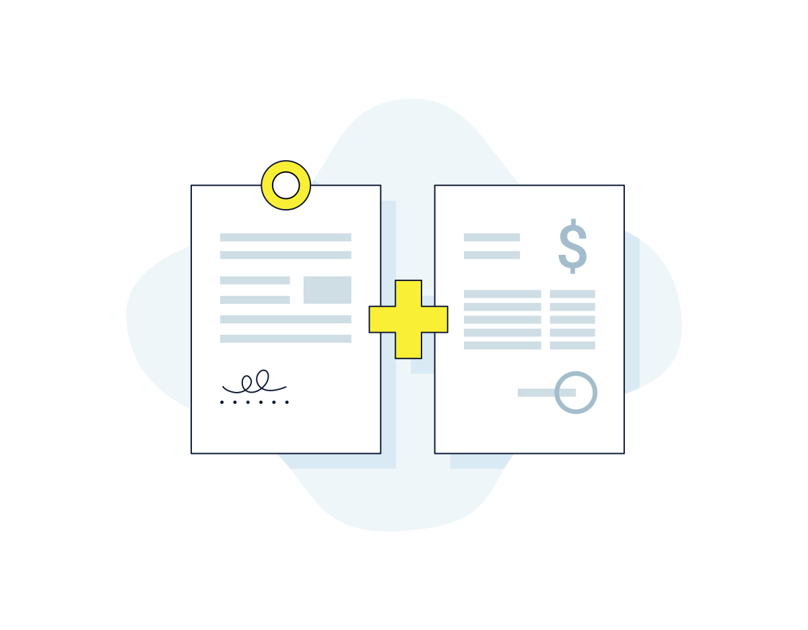
Conditional lien waiver
Unlike unconditional lien waivers, conditional lien waivers do require specific antecedents in order to become valid.
In other words, something specific has to transpire first before the lien waiver goes into effect. This “something specific” is almost always the receipt of payment.
So, a conditional lien waiver stipulates that the signor’s agreement to waive their lien rights may only transpire once the conditions have been fulfilled — i.e., they’ve been paid.
So, what’s the difference between conditional and unconditional lien waivers?
An unconditional lien waiver means that the signor has relinquished their rights to lien no matter what, whereas a conditional lien waiver imposes specific conditions that must be met before the lien rights are suspended.
Partial vs. Final
Hold your horses — we’re not done with conditional and unconditional lien waivers yet! There are two more terms we’ve yet to add into your lien waivers vocabulary that you’ll certainly want to know: partial vs. final.
Both terms can be applied to the aforementioned types of lien waivers (conditional vs. unconditional), so that means we are left with four distinct types:
- Partial Unconditional Lien Waivers
- Final Unconditional Lien Waivers
- Partial Conditional Lien Waivers
- Final Conditional Lien Waivers
Fortunately, these terms function almost exactly the way their names suggest.
Partial lien waivers are used when progress payment is expected for a construction project — meaning, when the work is partially complete — whereas final lien waivers are utilized when payment is expected upon the project being finalized.
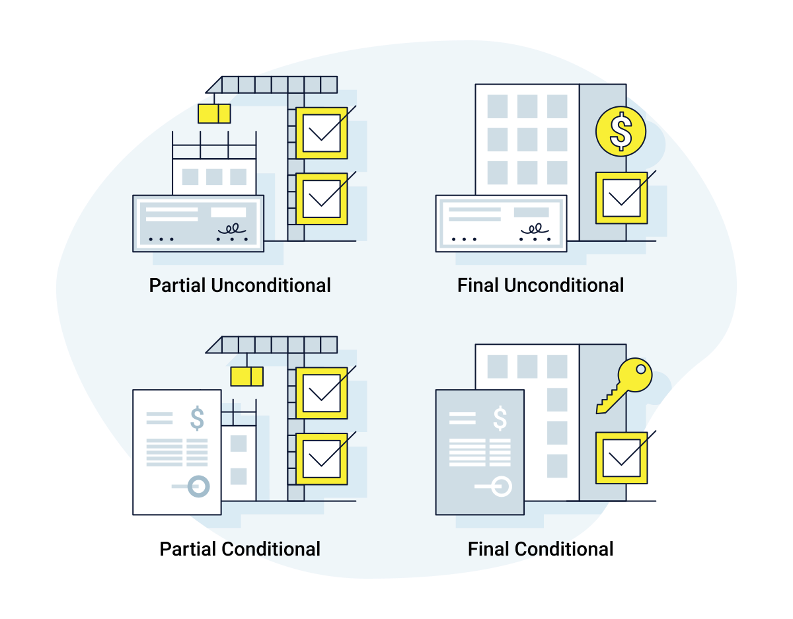
Here’s how it breaks down:
A partial unconditional lien waiver suspends all claimant rights to lien through the date or progress specified, with no stipulations or conditions.
A final unconditional lien waiver extinguishes all claimant rights upon receipt of payment.
A partial conditional lien waiver suspends all claimant’s rights to lien through the date or progress specified, so long as payment has been received and processed.
A final conditional lien waiver extinguishes all claimant rights upon receipt of final payment with certain provisions.
Last but not least, now that you have a basic understanding of lien waivers, let’s take a moment to compare them with lien releases.
Although the two terms sound quite similar, a lien release is far different from a lien waiver.
Lien waivers are legal receipts for payment; these documents help to prevent liens from coming into the picture in general.
A lien release, on the other hand, is only needed if a lien has been filed on a property.
Once the payment has been made and the mechanic’s lien has been settled, this lien release — also known as a lien cancellation — officially removes the lien; the lean has been released.
Think of it like this:
Lien waivers are preventative, taking place before a lien may be filed, whereas lien releases are reactive, only coming into the picture after a lien has been filed.
Chapter 3
Sworn Statements, List of suppliers, and Notice to Owners
Last, but certainly not least important in this overarching understanding of lien waivers, sworn statements, list of suppliers, and notice to owners are all important pieces to consider, when it comes to putting the lien waiver puzzle together.
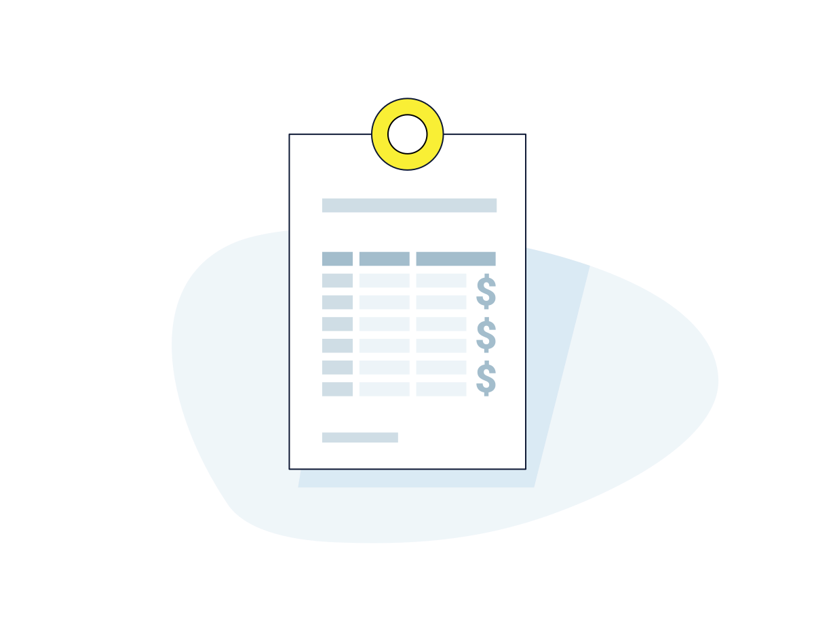
Sworn Statements
A sworn statement is a legal construction document that helps general contractors and owners keep a bird’s eye view over the inner workings of a construction project.
It includes a list of the specific contractors and suppliers that provide material or labor to a project, and also includes information about who owes money, how much they are owed, and their remaining balance on their contract.
Similar to the function of a lien waiver, the purpose of sworn statements is to track the payments being made to contractors and laborers as a means of protecting the owner from unexpected liens or claims.
Lien waivers are often required to back up the sworn statements, offering additional proof of the information presented.
List of Suppliers
Although it’s not actually a legal document, a List of Suppliers Form can be extremely helpful in providing a clear snapshot of an entire job’s ecosystem.
By getting a list of every party that will be involved in the project down the line, it can be much easier to draw conclusions about expectations, timelines, and payments.
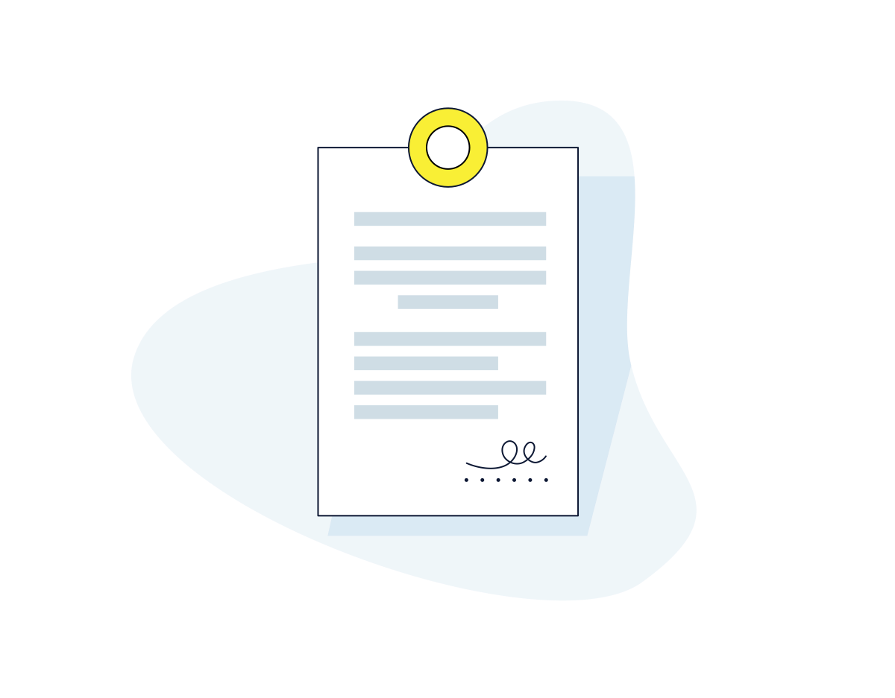
Notice to Owners
A notice sent before embarking upon a construction project, this legal notice establishes the right of contractors and subcontractors to file a mechanic’s lien in the event of a nonpayment.
Also known as a Notice to Owner and Contractor, Preliminary Notice, Notice of Furnishing, and Notice of Right to Lien, these documents must be sent to owners from contractors and suppliers in order to protect their right to lien.
Chapter 4
Lien Waiver State Statutes
Even though lien waiver forms are overwhelmingly intended to protect all parties that sign, not all lien waivers are created equal. In fact, the majority of states in the US actually don’t regulate the information to be included on such a form.
Only 12 out of the United States’ 50 states prescribe mandatory lien waiver forms, spelling out not only what information should appear on the form, but also how it should appear.
Done as a means of promoting clarity amongst all parties, these statutory forms take away any guesswork involved with filling out a lien waiver and work hard to protect the involved parties.
Let’s take a closer look.
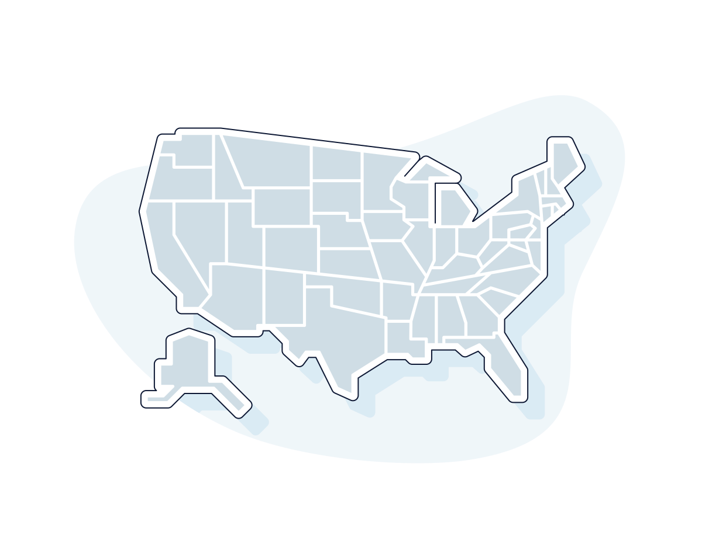
Which 12 States Mandate Statutory Forms?
Despite representing the minority in regards to their stance on lien waiver regulation across the United States, the 12 outlier states that do regulate lien waiver forms take the mandate very seriously.
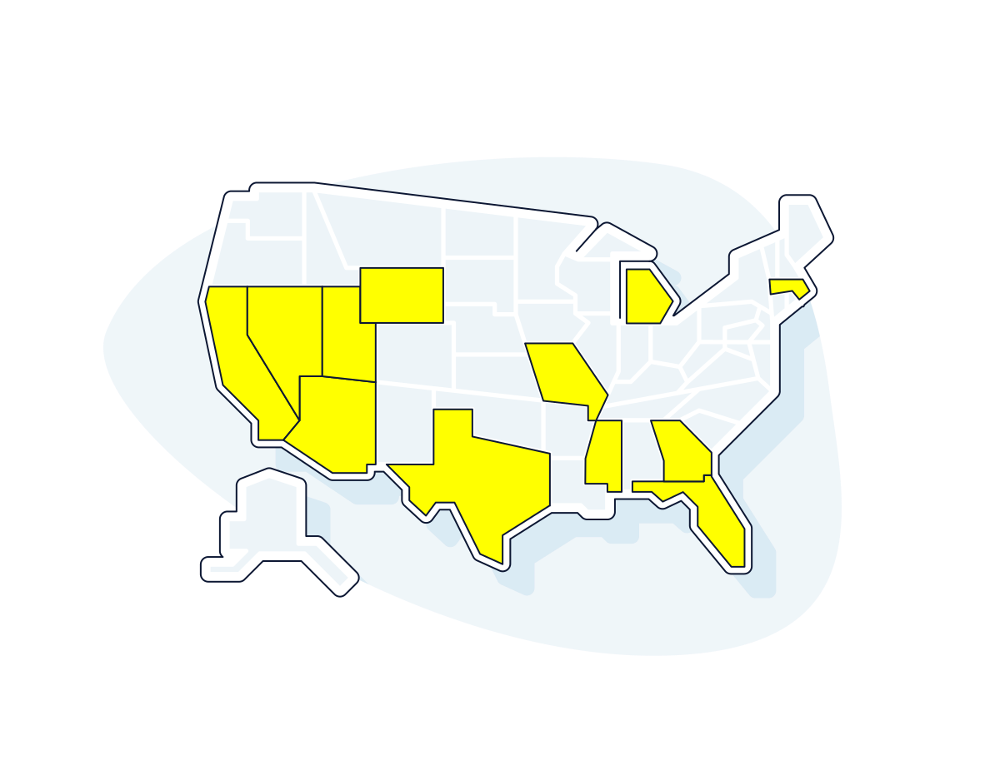
These are the dozen included:
- Arizona
- California
- Florida*
- Georgia
- Massachusetts
- Michigan
- Mississippi
- Missouri
- Nevada
- Texas
- Utah
- Wyoming
Just because these states make up a tight-knit group doesn’t mean their documentation requirements match exactly from state-to-state — but there are some similarities that typically apply.
First, when a state statute requires the use of a statutory lien waiver form, any form that deviates from the mandated document will almost always lead to invalidation.
That means that if a lien waiver form doesn’t “substantially” adhere to the law — as in, it doesn’t follow suit almost exactly — then it will be considered invalid and void. Of course, certain formatting and stylistic changes are certainly allowed, but the bulk of the information must come directly from the statutory form.
Second, some states take the protection even further by claiming that a lien waiver may also be invalidated if payment is not exchanged. For example, in the state of Georgia, O.C.G.A. 44-14-366(b) specifies:
Waiver not effective of enforceable unless: (1) It is pursuant to a waiver and release form duly executed by the claimant prescribed [in the statute]; and (2) The claimant has received payment for the claim.
Despite what the actual lien waiver form claims, in this case the waiver is not considered lawful or enforceable in the absence of payment — no matter what.
Why are the forms mandated in these specific states?
By and large, the states that mandate these lien waiver forms do so as a means of not only protecting the parties involved, but also protecting the states, themselves, from legal disputes piling up.
For the 38 states that don’t require statutory lien waiver forms, the information that is included on the form often varies far and wide.
Without a predetermined set of information to both give and receive, these forms can be wildly different, quite confusing, and can ultimately lead to uncertainty in the future.
Setting a state statute for lien waiver forms helps to keeps things clean and simple and prevents the state from having to deal with inane legal disputes that stem from indecipherable and unregulated forms.
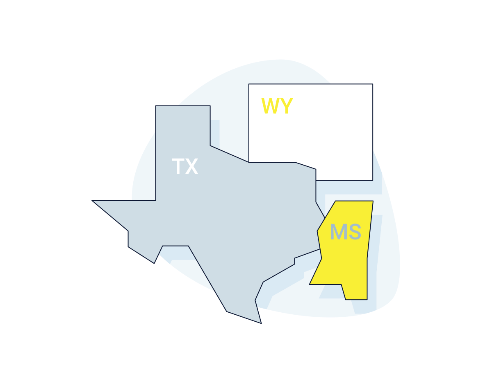
And which states also require notarization?
Texas, Mississippi and Wyoming are the only three states that actually require notarization of a lien waiver, but Texas’s law is by far the most explicit on the matter.
In the Lone Star State, the statute clearly says that lien waivers must be notarized in order to effectively release the owner from filed lien claims. In other words, if the lien waivers aren’t notarized, the owner is vulnerable to liens; likewise, the contractor has the ability to file liens.
The rules in Mississippi and Wyoming, on the other hand, aren’t as clear-cut. While both states’ forms present a place for notarization to go, the lien waiver statutes never clearly mandate notarization in order for the form to be considered valid.
Regardless, when it comes to construction projects in Mississippi and Wyoming, it’s generally considered wise to follow a “better safe than sorry” approach and proceed with the notarization in order to make sure all bases are covered.
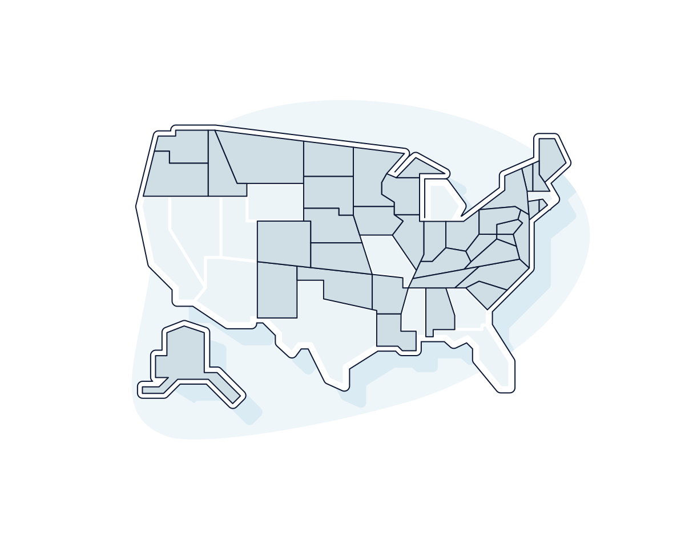
So, what’s the deal with the 38 states that don’t mandate the specifics of lien waivers?
As mentioned, lien waivers in the remaining 38 states are still considered very legitimate forms of legal protection in the construction business — and are very commonly used every single day.
At the end of the day, the lack of form regulation in these states may simply translate to a lack of consistency when it comes to filling out lien waiver forms. Particularly for contractors who work on various projects and/or job sites, the forms will most likely look different and ask for varying information each and every time.
Furthermore, the standardization of statutory forms likely makes them a bit easier to both digest and fill out (especially for parties that operate in those 12 states on a regular basis), and contrarily lead to more scrutiny and uncertainty from parties who operate within the remaining 38.
Chapter 5
Lien Waiver FAQs
Phew! At this point we’ve done a good job of covering the fundamentals of lien waivers and earning ourselves a pretty solid understanding of what they are and why they matter.
That being said, you probably realize that even though we’ve boiled down the lien waivers into this relatively concise guide, every individual lien waiver system is different; everyone’s processes and regulations for lien waivers are unique, varying due to factors like the size of your company and the state in which the job is taking place.
So, when it comes to understanding the intricacies of a system as seemingly nebulous as lien waivers, questions will always arise — and that’s exactly why this chapter is made up of some of the questions most frequently asked.
What form of partial and final waiver should I use?
The first thing you need to consider is where you are in the pecking order of any particular construction project. If you are the general contractor, you want something different than if you are one of the subcontractors. Generally speaking, you want to give a narrow release when you are receiving a check. More specifically, when someone is handing you a check for a release, you want to release the fewest rights as possible so that you preserve the greatest number of rights for later. The converse is true if you’re giving a check to somebody – you want them to release anything and everything under the sun, so you don’t have to worry about those claims being an issue later.
The most basic form of release (a narrow release): The most basic form of release only releases lien rights and no other rights. In Florida for example, this narrow form of release can be found in Florida Statutes Chapter 713, both partial and final (you can download free release forms at https://www.thelienzone.com/forms). This basic type of release only releases lien rights through a certain day for partial releases and through the date signed on final releases. All other rights of the releasor are retained, such as claims for extras, changes and delays. Here is a sample of the operative language in this type of release:
“The undersigned lienor, in consideration of the sum of $_____, hereby waives and releases its lien and right to claim a lien for labor, services, or materials furnished through [DATE] to [CUSTOMER] on the job of [JOB NAME] to the following property: [ADDRESS]. This waiver and release does not cover any retention or labor, services, or materials furnished after the date specified.”
When you are giving a release and getting a check, this is the type of release form you should be giving. However, if you are giving a check and getting the release, you should demand a form that releases more rights, as we discuss below.
Custom form of release (a broad release): This type of release looks very different from the basic release form, mostly because it is much longer. While you need to read every release before you sign it, you need to pay particular attention to this type of release because you are giving up most if not all of your rights, in addition to lien rights. This specifically includes all claims, delays, and change orders effective prior to and including the through date in the release. If you are a general contractor, this is the form of release that you should be getting from your subcontractors (or a sub when paying your sub-subs). If you are a subcontractor and you’re receiving a check and having to give a release like this, you need to understand what rights you’re giving away (pretty much all your rights). If you agree to a form of release in your contract, then that’s the form that you are bound to accept during the course of the project. So, if the general contractor or owner attaches a form of release to your contract, or they make a reference to the fact that you agree to use whatever release form they deem fit, you need to review it when you negotiate your contract. Said simply, you must negotiate the form of release just like you negotiate other components of the contract. Here is a sample of the operative language of a broad custom release:
“The undersigned, in consideration of the sum of $10 does hereby waive and release its lien and rights to claim a lien as well as any and all claims, change orders, works, materials, delays, fees, costs, losses, expenses, damages or sums for the labor, services, equipment, and materials for improvements to the [PROJECT] or furnished to [OWNER] and [CONTRACTOR] through and including the date hereof as well as releases any and all claims, losses, damages, expenses, and fees against [OWNER] and [CONTRACTOR] and their respective employees and agents. The undersigned warrants and represents that it has paid all bills, taxes, and sums due to any and all suppliers, persons, employees, agents, and subcontractors working under or through the undersigned through and including the date hereof. The undersigned further warrants that all work and materials supplied by, through or under it fully comply with the applicable rules, codes, plans, specifications, and contract documents.”
What is a conditional release and when should I use it?
If you need to condition your lien release upon payment of money you can achieve this by issuing what’s called a conditional release. This is common when you are giving a release before you get the payment or if you are exchanging a release for a check and you are concerned that it may not clear. A conditional release is a release that is expressly conditioned upon payment and therefore is not effective until you receive the payment that’s recited in the document. A conditional release will say something like:
“Notwithstanding anything to the contrary, this waiver and release is conditioned upon and not effective until the undersigned receives paid funds of $______.”
In the blank, you need to put whatever amount you’re expecting to receive (not $10, but the actual amount you are expecting). Adding a statement like this makes the release expressly contingent on actually getting the money. You can type this in or handwrite it the document.
Also, watch out for releases that are titled “conditional” but are not. Sometimes, we see releases that say “conditional partial release” but then when you read the document, they’re not conditioned. Conditional releases need to specifically spell out the condition. The fact that the title says “conditional” means nothing if the body of the release does not actually contain conditional language.
Finally, as an owner or general contractor, you need to be careful about receiving and paying against conditional releases from those you are not paying directly. For example, as an owner, if you are about to pay the contractor and the contractor gives you conditional releases from his subs and suppliers, you don’t have a direct ability to control those conditions. If you pay the contractor and he does not pay the subs and suppliers, the conditions in those lower-tier releases are not satisfied and they still have their lien rights. To avoid this, you have two options. The first is to ask the contractor to fund the supplier or otherwise give you an unconditional release from the supplier. The second options is to issue a joint check so you can control the condition (by making payment to the contractor and the subs).
What “Through Date” should I use on my release?
What “through date” should you use? What if the “through date” and the payment amount do not match? Know that the through date is the effective date of the release. A release can be signed today but have a through date two months ago. That means, you can sign the document today and say that the effective through date of this release is April 5th, March 9th or September 1st. You can make the through date any day you want. Now here is the key – the through date controls over the payment amount (this is where most people make a mistake). For example, you are owed $100,000 for work through the end of the month. If you sign a release in exchange for $75,000 and the through date is the end of the month, you just released $100,000 worth of your rights for $75,000 (not good). What you need to know is that if the through date and the payment amount don’t match, then you need to change one of them or both of them, but you cannot accept it as it is. In this example, you could have solved the problem by moving the through date from the end of the month to the date that would have matched $75,000 of work, say, for example, the 21st of the month.
Why does the release say $10?
I’m not getting $10 nor am I giving them $10, so why do I need to have a release that says $10? A $10 releases is valid if you receive any type of consideration even if you receive no money at all. Here are the three most common situations when we see the use of $10 releases.
The first is when the sub or supplier has sent a notice to owner but has done no work in that payment period. For example, you’re a subcontractor on a job, and you have sent your notice to owner, but you haven’t done any work yet. That notice to owner has put you on the contractor’s and owner’s radar so they are going to want to get a release from you. But since you are not owed any money, the release will say $10.
The second is when the person giving the check wants to better protect themselves from a possible dispute over the amount of payment in the future. For example, if you’re a contractor expecting a check for $25,000, you would like the release to recite that amount (so there is no doubt that you are giving up rights for an exact amount of money). However, as the owner, when you are giving the check and getting a release, you would always like it to say $10. The reason is that, as the payor, you don’t want the contractor to come back and say “I was due $30,000 and you only gave me $25,000, this release is no good.” When the release only says $10, the legal impact is that the contractor received some amount of consideration that they were satisfied with to make the release effective, thereby eliminating an argument that more money should have been given. This rationale is true for anyone giving a check and getting a release – you would like the release to say $10.
The third and final reason is to mask the amounts paid to subs and suppliers. For example, if you are a general contractor with a lump sum contract with the owner, you may want all of your releases to all lower-tier trades to say $10 so the owner cannot compile the releases and add up the total paid out to the trades.

Alex Barthet, Esq.
Board Certified in Construction Law by the Florida Bar and a mechanical engineer by education, he runs The Barthet Construction Law Firm (www.barthet.com), a 11 lawyer firm in South Florida. Alex has been repeatedly selected by his peers for inclusion in The Best Lawyers in America and Florida Super Lawyers within the specialty of construction law. He is active in his local Associated Builders and Contractors association and maintains an active social media presence highlighting #MiamiConstruction and construction law issues. Alex can be found on LinkedIn (https://www.linkedin.com/in/alexbarthet/), Instagram (https://www.instagram.com/thelienzone/), YouTube (https://www.youtube.com/user/TheLienZone/) and his weekly podcast, www.TheLienZonePodcast.com.
Does North Carolina have a statutory required lien waiver form?
No. North Carolina does not have a statutory required form.
However, there lien waiver are recognized and are subject to common and statutory law regarding contracts that affect what is enforced regarding the lien waiver.
Specifically, an unconditional lien waiver may be enforced, even without payment, so one signing an unconditional lien waiver should not do so, unless payment is contemporaneously received.
Does South Carolina have a statutory required lien waiver form?
No. However, lien waivers are governed by contract law.
Proof of consideration must be provided to enforce an unconditional lien waiver, otherwise, unlike in North Carolina, an unconditional lien waiver will fail for lack of consideration.
Can a subcontractor be required to waive its lien rights in South Carolina at the time of Contract?
No. A Contractor cannot require its subcontractor to waive its lien rights at the time of Contract.

Matthew Cox
Partner at SmithCurrie
Can the General Contractor accept a copy of a Subcontractor’s lien waiver for progress billing purposes as opposed to an original?
There are really two answers:
The Contractor must review its Agreement with the Owner to see if it is required to provide originals.
Regardless of lien laws, a party should always follow its contract.
If the Agreement is silent, copies of lien waivers may be sufficient for progress and final billing.
The rules of evidence generally provide that a duplicate is admissible to the same extent as an original unless a genuine question is raised as to the authenticity of the original.
Duplicates are not inadmissible solely because they are in electronic format. And since waivers are not recordable instruments such as liens themselves or Satisfaction of Liens, that is not a reason to require originals.
However, in order to remove all doubt, a copy may be accepted to fund draw requests, but the best practice is to follow up with receipt of the original.
The original should be kept until the deadline to file a lien has expired.

Joshua B. Levy
Partner at Husch Blackwell
Learn more about Husch Blackwell at http://huschblackwell.com/
Chapter 6
Lien Waiver Software and Tools
Congratulations! You’ve made it this far – you’ve not only grasped a holistic understanding of lien waivers in general, but you’re also ready to start sending them out.
So, that means you’re ready to create each form individually, and then get them printed, mailed, signed, returned, filed, and marked as “paid.” Right? Wrong.
It doesn’t have to be that complicated.
Unlike the tedious lien waiver ecosystems of yesteryear (read: the laborious process we went through just 2 lines above), Built For Contractors simplifies the lien waiver process from A to Z, making it a breeze to create and send the forms as a contractor, and just as easy for subcontractors to sign and return, completing the system in a few quick clicks.
An intuitive, cloud-based technology that distributes lien waiver forms, simplifies payment, and ultimately accelerates the building process, Built streamlines every step of the lien waiver process so you can spend less time sifting through paperwork.
Gone are the endless days spent creating individual waivers specific to every subcontractor, mechanic, or materials man included on the job.
Gone are the endless hours spent printing forms, stuffing envelopes, and then addressing, stamping, sending and waiting while your lien waivers travel through snail mail in order to be signed, sealed, and delivered back to you.
Gone are the endless trips to the job site where checks are handed out, time and time again, only to be lost or stolen, and ultimately replaced with yet another trip.
Facilitating every step along the lien waiver’s lifecycle, Built for Contractors is the platform for construction payments and receipts.
This program offers the functionality to store notice to owners, create both primary tier and lower-tier lien waivers, gathers vital documentation and sworn statements, and ultimately expedites the exchange of lien waivers for payments.
Overall, Built for Contractors will reduce the time you spend worrying about keeping track of lien waivers, and instead improve the efficiency of your current processes.
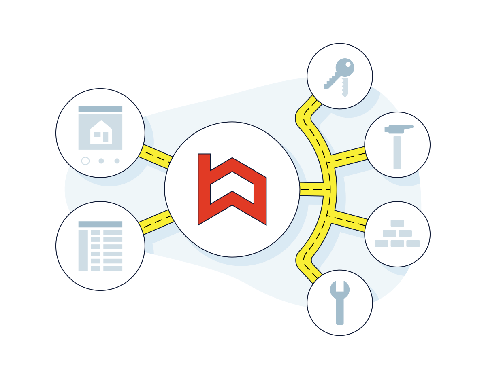
The Benefits of Connection
With B4C, contractors can complete lien waivers quickly, pay vendors immediately, and ultimately keep moving forward with the job at hand.
Care to know why? It’s because of connection.
Built has the capability to connect to and sync with the programs you’re probably already using, which means there’s one less hurdle for you to overcome on the way to simplifying your workflow: no big learning curve, no major data entry, and no additional program for you to have to monitor.
Delivered in the form of a plugin, Built for Contractors can connect directly to your project management software like Procore and to your accounting programs like QuickBooks Online.
By syncing all three together, you’ll eliminate the need to duplicate data entries and best of all ensure that all systems are on the same page, every step of the way.
Furthermore, because Built can access all vendor information populated in Procore, it makes creating lien waivers as simple as a click. Just select the information necessary to complete the form, and then send it off to the appropriate parties’ emails with one more press of the mouse.
Featuring best-in-class integrations to software you already use and trust, Built for Contractors continues to make your job easier.
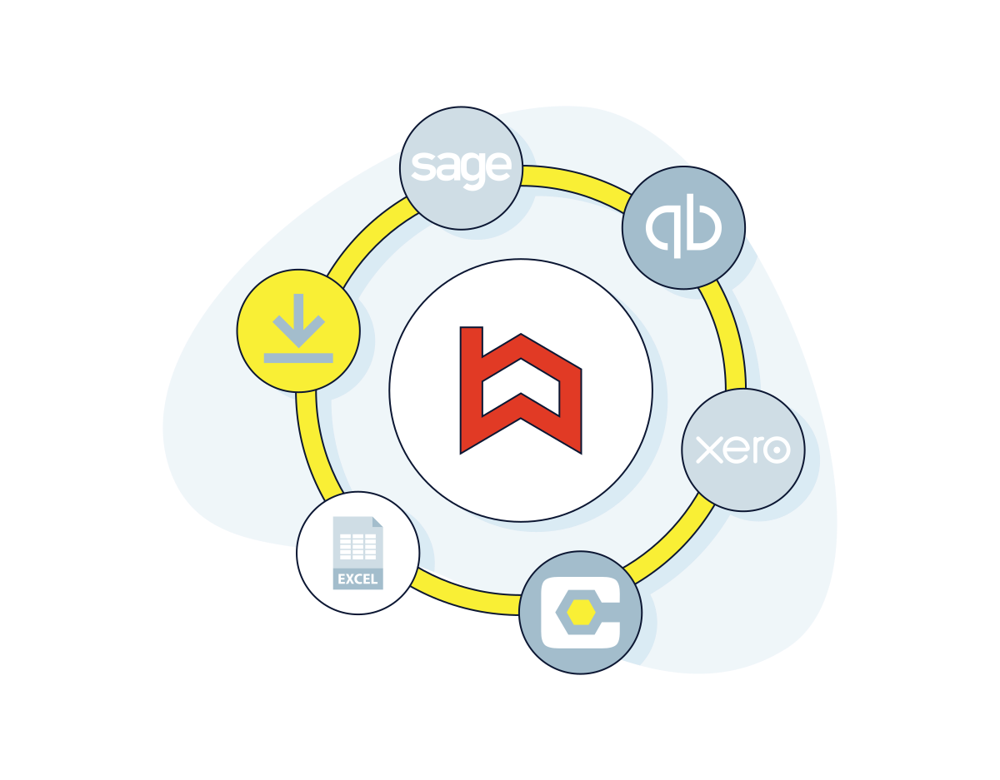
Integrate with Your Current Tools
Procore and QuickBooks aren’t the only two programs who have befriended B4C; there are a whole host of integrations that help contractors complete necessary paperwork without all the pomp and circumstance.
Integrate with the following programs and watch as your lien waiver circus packs up and leaves town.
- Procore – Built integrates so you can manage lien waivers directly from your Procore dashboard. Connect to Procore Construction Financials or your selected accounting software to process payment and complete the cycle.
- Intuit QuickBooks (QuickBooks Enterprise, QuickBooks Desktop, QuickBooks Online) – Use the centralized Built dashboard to generate, send, and track of lien waivers, and use information from bills, invoices and payments from your QuickBooks account to bring them to fruition without additional data entry.
- Xero – Existing data in your Xero account can be leveraged to create, send and track all kinds of lien waivers. The bills, invoices and payments you’ve entered into Xero will inform the documentation you generate and collect in B4C.
- Sage (Sage 300 CRE, Sage 100 Contractor) – Manage the entire lien waiver process with the Built integration with Sage.
- Excel/CSV – Utilize the Built for Contractors program to complete the lien waiver cycle quickly and efficiently, and use our Excel/CVC integration to import your preexisting data quickly and seamlessly.
- DocuSign – Request signatures and notarizations directly from your DocuSign account, and track their progress in your Built dashboard.
Features that Move Construction Forward
Similar to the toolboxes that your contractors utilize every day to expedite their work, Built for Contractors carries with it a variety of tools that simplify the lien waiver cycle and expedite your workflow:
- Lien Waiver Management syncs with your current project management software like Procore, and pulls all data necessary for generating lien waivers. Contractors have the ability to create, send, collect, and track all necessary documents from one master dashboard in a matter of seconds. The bird’s eye view of the entire system offers excellent visibility and allows for superior, electronic lien waiver management.
- Lien Waiver + Electronic Payment allows contractors to issue same-day ACH payment to their vendors immediately upon receiving completed lien waivers. The near-instant payment motivates subcontractors to complete their work and further generates trust between subs and those who hired them.
- Lower-Tier Lien Waiver Management, xTier manages lien waiver payments from A to Z. With the capability to send out primary and lower-tier lien waivers, contractors from every rung of the proverbial ladder are involved in the lien waiver process, which means everyone is ultimately held accountable for getting the job done.
- The Procore QuickBooks Online Bridge allows data to consistently synchronize between the two programs. Lien waiver management transpires directly in Procore, which allows payments to be automated straight from QuickBooks Online.
Brittany Pfister
General Council